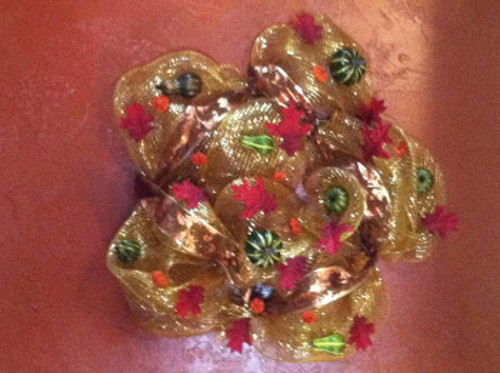
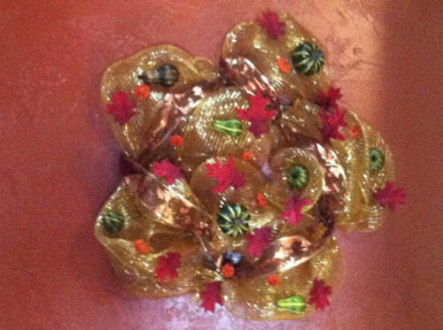

Welcome
Hello, and welcome to At Home with Carrie, My lil Culinary & Crafty Boutique. Here you will find everything, from homemade candles, to home decor and seasonal decorations. As well as homemade canned goods, and natural organic foodie bites. We even do small cocktail party catering!

 
